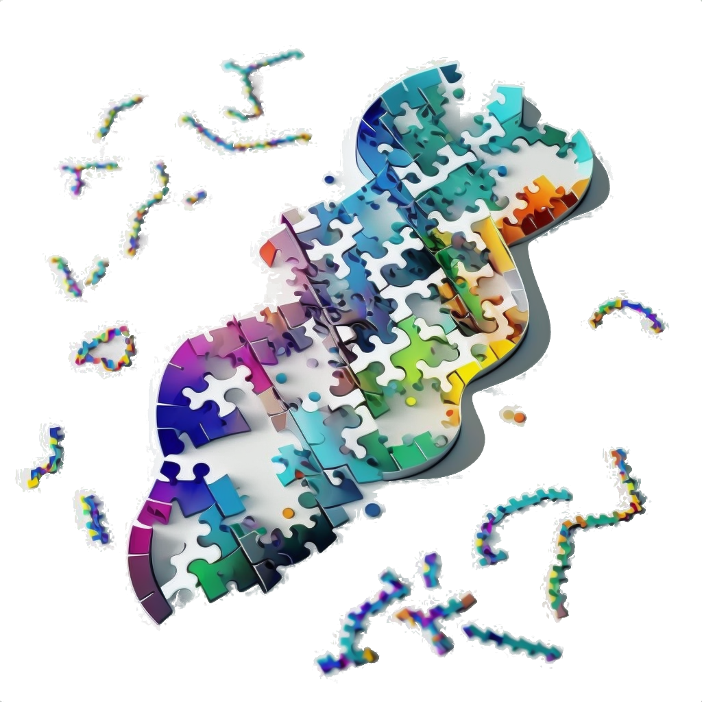
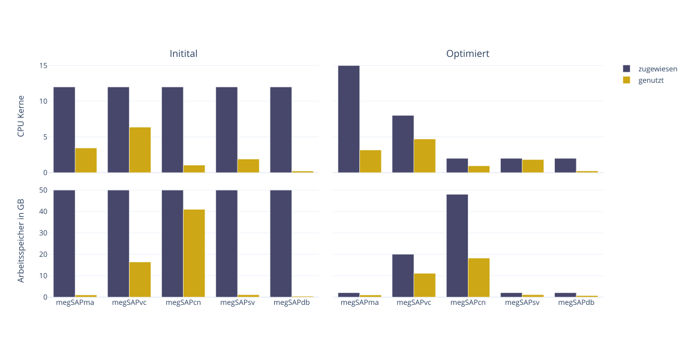
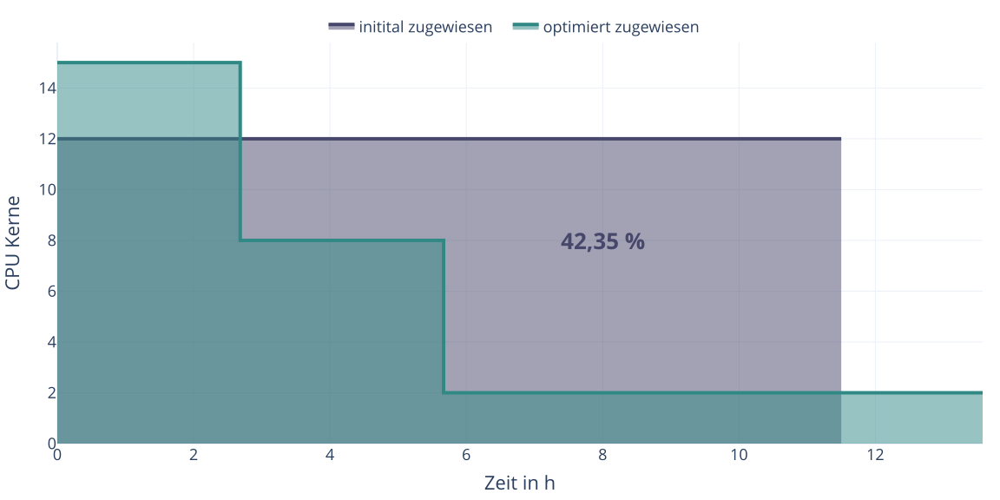
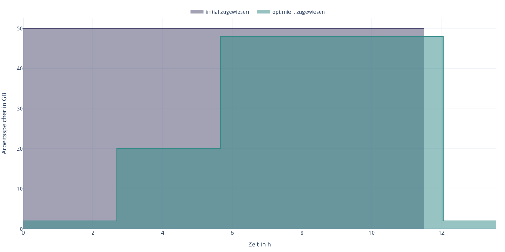
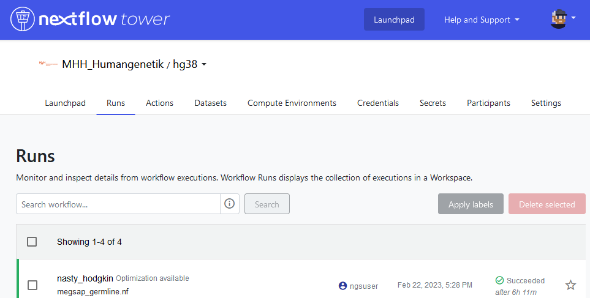
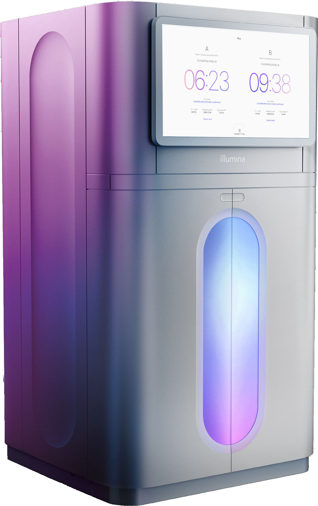
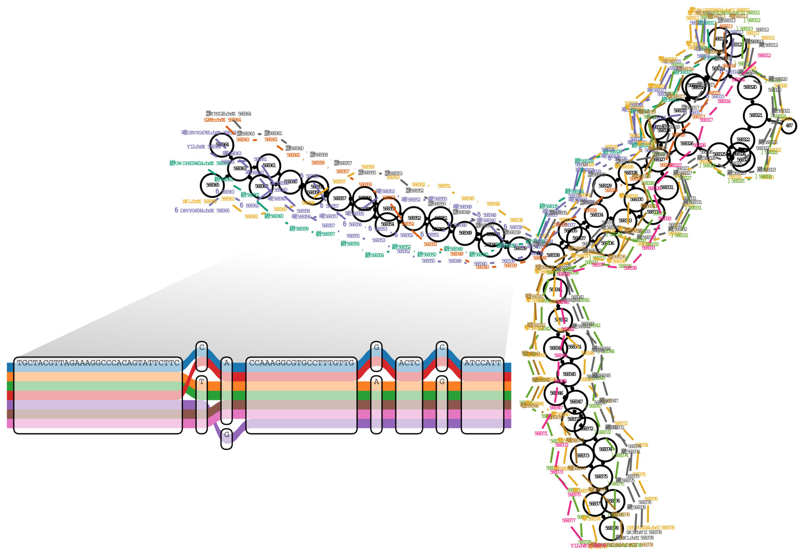

Thesis Präsentation
Implementing a Scientific Workflow Management System to Conduct the Transition to a Different Reference Genome of a Genetic Analysis Pipeline
![]()
FOM Hochschule für Oekonomie & Management
Medizinische Hochschule Hannover, Institut für Humangenetik
Einleitung
Einleitung - Auslöser
Wechsel des Referenzgenom in der genetischen Analyse Pipeline
GRCh37 → GRCh38

Einleitung - Probleme
- Prozessierungskapazitäten
- Speicherplatz
- Bandbreite
- Prozessierungsdauer
- Architektur
Einleitung - Ziele
- Professionalisierung durch Einführung eines
Scientific Workflow Management Systems (SWfMS)
für die bestehende
Medical Genetics Sequence Analysis Pipeline (megSAP) - Mögliche Nutzung von Cloud Infrastruktur prüfen
Methode
Methode - Design Science Research
Artefakt
Artefakt - Entscheidung für SWfMS
Entscheidung auf Basis der Literaturrecherche
- Domain-specific language
- Portierbar
- Versionierbar
- Support bereits eingesetzter Architektur
- SLURM
- Singularity
- Fehlerbehandlung
Artefakt - Konvertierung Pipeline zu Nextflow

Artefakt - BAM zu FastQ Konvertierung

Artefakt - megSAP aufteilen

Artefakt - Optimierung

Artefakt - Resilienz und Monitoring
- Schritte werden neu gestartet mit mehr Arbeitsspeicher
- Email nach Abschluss Pipeline
Cloudnutzung
Cloudnutzung - Kostenberechnung AWS
| Beschreibung | EC2 Instanztyp | CPUs | Arbeitsspeicher in GB | Kosten in $ |
|---|---|---|---|---|
| Speicher | 2,45 | |||
| Datentransfer | 4,50 | |||
| bam2fastq | t3.large | 2 | 8 | 0,16 |
| megSAPma | c6i.4xlarge | 16 | 32 | 2,08 |
| megSAPvc | t3.2xlarge | 8 | 32 | 1,15 |
| megSAPcn | r5.2xlarge | 8 | 64 | 3,88 |
| megSAPsv | t3.small | 2 | 2 | 0,04 |
| dragen | f1.2xlarge | 8 | 122 | 12,08 |
| Summe | 26,34 |
Cloudnutzung - Kostenberechnung Upload mit AWS Snowball
- 300 $ für 10 Tage
- 80 TB HDD Kapazität
Diskussion
Diskussion - Optimierung CPU Nutzung

Diskussion - Optimierung Speichernutzung

Diskussion - Kostenersparnis Cloud
“Nur” 11,56 % günstiger durch Optimierung:
26,33 $ statt 29,77 $
- Instanztypen passen nicht exakt
- DRAGEN größter Kostenfaktor
Fazit und Ausblick
Fazit und Ausblick - Effizienzsteigerung
- Übernahme in diagnostische Routine
- Weitere, kontinuierliche Optimierung
- Aufteilung von megSAP in kleinere Schritte
- Speichern im CRAM Dateiformat
Fazit und Ausblick - Usability
Nutzung Nextflow Tower

Fazit und Ausblick - Neuer Sequencer

Einführung NovaSeq X Plus ab Q3 2023 erfordert starke Anpassungen der Pipeline
Fazit und Ausblick - Referenzgenom
- ALT Aware
- Telomere-to-Telomere (T2T)
- Graph Genom

Danke
Medizinische Hochschule Hannover
Institut für Humangenetik
Prof. Dr. med. Brigitte Schlegelberger
Dr. rer. nat. Gunnar Schmidt
Dr. rer. nat. Winfried Hofmann
FOM Hochschule für Oekonomie & Management
Prof. Dr. Stephan Kluth
Quellenverzeichnis
Benedikt Schnur - Implementing a Scientific Workflow Management System to Conduct the Transition to a Different Reference Genome of a Genetic Analysis Pipeline